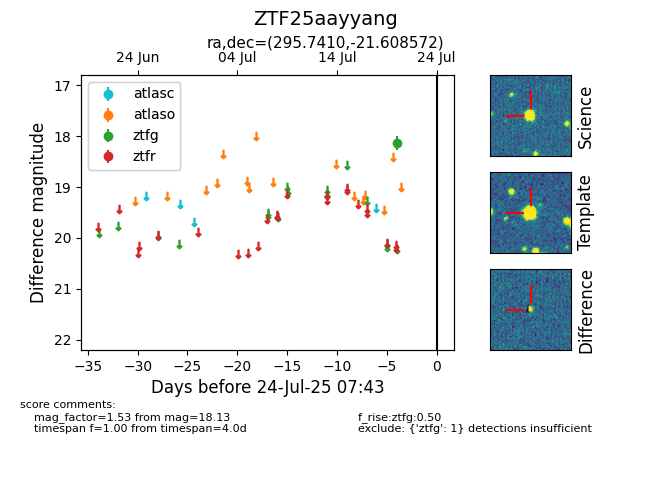

Target ZTF25aayyang at 2025-07-24 07:43, see:
FINK: fink-portal.org/ZTF25aayyang
Lasair: lasair-ztf.lsst.ac.uk/objects/ZTF25aayyang
ALeRCE: alerce.online/object/ZTF25aayyang
alt names
ZTF25aayyang (ztf,fink)
coordinates:
equatorial (ra, dec) = (295.7410,-21.60857)
galactic (l, b) = (18.5002,-20.63346)
photometry
last ztfg=18.13
1 ztfg detections
